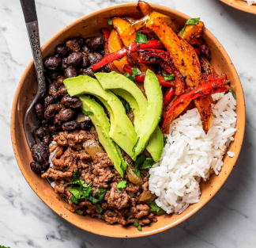

Taco Bowls

Taco bowls are full of perfectly seasoned ground beef, veggies, and beans served over rice and topped with avocado and fresh cilantro
Are you looking for a new spin on taco night? Try these taco rice bowls instead! All the goodies you would find in a delicious taco served over rice instead of wrapped up in a tortilla. Between the beef, the veggies, the black beans, and the rice, you are getting a whole meal out of just one recipe.
Thanks to the taco seasoning added to the beef and the beans, everything is bursting with flavor. And Taco Bowls are ready in just 30 minutes! You’ll be enthusiastically plunging your fork into these bowls in no time.
Ingredients
- Rice
- Water
- Jasmine rice – Make sure to rinse the rice before using.
- Roasted bell peppers
- Bell peppers
- Olive oil
- Cumin
- Smoked paprika
- Ground black pepper
- Sea salt
- Beans
- Canned black beans – Black beans are my favorites, but you could use pinto beans instead. Refried beans would work here as well
- Taco seasoning – I used Trader Joe’s taco seasoning, but any 1-ounce packet will do.
- Sea salt
- Seasoned ground beef
- Olive oil
- Onion
- Ground beef – Feel free to use ground chicken or turkey instead.
- Sea salt
- Taco seasoning
- Avocado
- Fresh cilantro
Steps
- Boil the water and add the rice before reducing the heat to a simmer.
- Cook the rice covered for about 20 minutes before removing from the heat and fluffing with a fork.
- Spread the bell peppers over a baking sheet lined with aluminum foil and drizzle with olive oil, cumin, smoked paprika, sea salt, and ground black pepper. Toss to coat.
- Combine the beans and the taco seasoning in a saucepan and simmer for 10 minutes.
- Heat the olive oil over medium-high heat and add the onions and saute until translucent.
- Brown the ground beef. Add the beef to the pan with the onions and season with sea salt and taco seasoning. Brown the beef, breaking it apart, and stir until browned and cooked through.
- Distribute the rice, beans, bell peppers, and ground beef between 4 bowls.
- Top with cilantro and avocado.